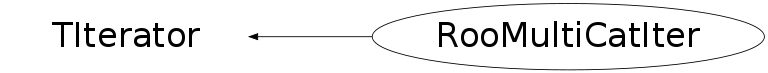

class RooMultiCatIter: public TIterator
RooMultiCatIter iterators over all state permutations of a list of categories. It serves as the state iterator for a RooSuperCategory or a RooMultiCategory. Since this iterator only constructs state labels and does not change the value of its input categories, it is not required that its inputs are LValues. For cases where all inputs are LValues (such as for RooSuperCategory) the values of the input can be changes by assigning the super category the string label generated by this iterator
Function Members (Methods)
public:
| RooMultiCatIter(const RooMultiCatIter& other) | |
| RooMultiCatIter(const RooArgSet& catList, const char* rangeName = 0) | |
| virtual | ~RooMultiCatIter() |
| static TClass* | Class() |
| virtual const TCollection* | GetCollection() const |
| virtual Option_t* | TIterator::GetOption() const |
| virtual TClass* | IsA() const |
| virtual TObject* | Next() |
| virtual bool | operator!=(const TIterator& aIter) const |
| TObject* | TIterator::operator()() |
| virtual TObject* | operator*() const |
| RooMultiCatIter& | operator=(const RooMultiCatIter&) |
| virtual void | Reset() |
| virtual void | ShowMembers(TMemberInspector& insp) |
| virtual void | Streamer(TBuffer& b) |
| void | StreamerNVirtual(TBuffer& b) |
protected:
| TObjString* | compositeLabel() |
| void | initialize(const RooArgSet& catList) |
| virtual TIterator& | operator=(const TIterator&) |
Data Members
protected:
| RooArgSet | _catList | Set of categories iterated over |
| RooAbsCategoryLValue** | _catPtrList | Array of pointers to original categories |
| TObjString | _compositeLabel | |
| TObject* | _curItem | Current item returned by Next() |
| Int_t | _curIter | Current location of master iterator |
| RooCatType* | _curTypeList | List of current types |
| TIterator** | _iterList | Array of category type iterators |
| Int_t | _nIter | Number of categories/iterators in use |
| TString | _rangeName | Range name (optional) |
Class Charts
{kind=link}
{kind=link}
{kind=link}
{kind=link}

Function documentation
RooMultiCatIter(const RooArgSet& catList, const char* rangeName = 0)
Construct iterator over all permutations of states of categories in catList. If rangeName is not null, iteration is restricted to states that are selected in the given range name
TObjString* compositeLabel()
Construct string with composite object label corresponding to the state name of a RooMultiCategory or RooSuperCategory constructed from this set of input categories
bool operator!=(const TIterator& aIter) const
Comparison operator to other iterator Returns true if both iterator iterate over the same set of input categories and are not at the same sequential position